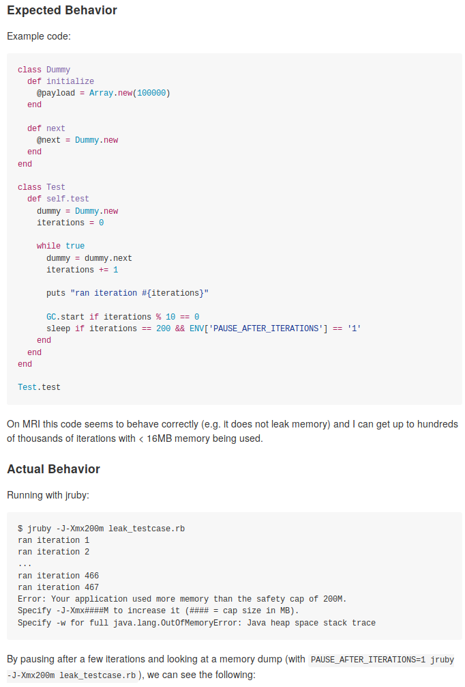

why
you should
be using
JRuby
in PRODUCTION
who am i
IVO anjo
Ruby ❤
CONCURRENCY ❤
}
JRuby ❤
@knux
{talkdesk_ruby_ninja: self}
jruby?
who am i
IVO anjo
Ruby ❤
CONCURRENCY ❤
}
JRuby ❤
@knux
{talkdesk_ruby_ninja: self}
why
you should
be using
  Ruby
in PRODUCTION
MINSWAN
matz is nice so we are nice
expressive
duck typing
everything is an object
easy to write dslₛ
less boilerplate
awesome pry repl
awesome web libraries
RAILS
NOT RAILS: GRAPE, RODA, HANAMI
awesome testing libraries
RSPEC
cucumber
awesome * libraries
data stores
apis
“There's a gem for that”
* server
* PROTOCOL
SO... JRUBY?
ruby on top of the java vm
SO... JRUBY?
WHy #1: PERFORMANCE
JIT COMPILER
STATE-of-THE-ART GC
SO... JRUBY?
WHy #2: MASSIVELY PARALLEL
UNLEASH THE THREADS
...AND THE ASYNC WORK
SO... JRUBY?
WHy #3: TROUBLESHOOTING
USE AWESOME JAVA TOOLING
• PROFILERS
• MONITORING
• DEBUGGERS
}
IN PRODUCTION!
SO... JRUBY?
WHy #4: EASY TO DEPLOY
RUBY TOOLING OR JAVA TOOLING
SO... JRUBY?
WHy #4½: EASY TO DEPLOY
DEPLOY AS RUBY SOURCES
OR DEPLOY AS SINGLE .JAR/.WAR
HOW hard is it to start using?
$ rvm install jruby-9.1.7.0
$ rvm USE jruby-9.1.7.0
$ GEM INSTALL BUNDLER
$ BUNDLE INSTALL
SPENT A FEW MINUTES PORTING TALKDESK's RAILS MONOLITH
1635 examples, 19 failures, 41 pending
SPENT A FEW MINUTES PORTING TALKDESK's RAILS MONOLITH
AUTHENTICATE, PLACE & LIST CALLS, ACCESS SETTINGS, ETC.
going cold-turkey is a big step
i still recommend you carefully validate your app :)
“thread carefully”?
tales
from the
trenches
contacts importer
Contacts
API
Contacts
Importer
Salesforce
Zendesk
NSA
v0: unleash the threads
???
load up visualvm
googling around
oops, we were using the gem wrong
üëç fixed
v1: CPU-LIMITED? WAT?
THIS DOESN'T SEEM RIGHT...
üëç fix merged upstream!
v2: memory leaks :(
load up visualvm


follow the breadcrumbs
üëç fixED
üëç fixED
v2½: memory leaks :(

3 DAYS LATER! :)
contacts importer
huge productivity boost
wizard-level debugging MADE easy
hit double our performance target on a single instance
JRuby
101
in development
export JRUBY_OPTS=--dev
bundle install --binstubs
in development
gem 'pry-byebug',
platforms: :ruby
gem 'pry-debugger-jruby',
platforms: :jrubyexport JRUBY_OPTS="--dev --debug"
in development
gem 'multi_json'
gem 'oj', platforms: :ruby
gem 'jrjackson', platforms: :jruby
if RUBY_PLATFORM == 'java'
require 'jrjackson'
MultiJson.use :jr_jackson
else
require 'oj'
MultiJson.use :oj
end
in development
jruby-lint
./Gemfile:24: [gems, warning] Found gem 'oj' which is reported to have some issues: Try gson, json or json_pure instead. Try any one of the following JRuby-based servers: Trinidad, Mizuno, Kirk or Puma (though make sure to use the JRuby-native version of the gem). ./Gemfile:43: [gems, warning] Found gem 'bson_ext' which is reported to have some issues: bson_ext isn't used with JRuby. Instead, some native Java extensions are bundled with the bson gem. ./app/controllers/api/user_controller.rb:25: [nonatomic, warning] Non-local operator assignment is not guaranteed to be atomic
in development
concurrent-ruby
is your friend
in development
visualvm
in development
netbeans profiling
in development
jmap/jstack
$ jmap -histo 17118 | grep rubyobj
17: 9000 288000 rubyobj.Example.A
337: 98 3136 rubyobj.Gem.Requirement
435: 52 1664 rubyobj.Gem.Dependency
470: 42 1344 rubyobj.OtherStuff.B
477: 41 1312 rubyobj.Gem.Version
762: 13 416 rubyobj.Gem.Specification
1103: 6 192 rubyobj.Gem.Platform
4060: 1 32 rubyobj.Gem.PathSupport
4061: 1 32 rubyobj.Gem.StubSpecification
4062: 1 32 rubyobj.Gem.StubSpecification.StubLine
4063: 1 32 rubyobj.Monitorexport JRUBY_OPTS="-Xreify.classes=true"
in development
yourkit & jprofiler

in production
export JRUBY_OPTS=\ "-Xcompile.invokedynamic=true -Xmanagement.enabled=true"
export JAVA_OPTS=\ "-Xmx3g -XX:+PrintGCDetails"
in production
export JAVA_OPTS=\ "-Xss512k -Xmx500m -XX:ReservedCodeCacheSize=90m -XX:InitialCodeCacheSize=90m -XX:MaxMetaspaceSize=120m -XX:+PrintGCDetails -XX:+PrintCodeCache"